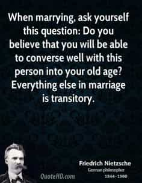
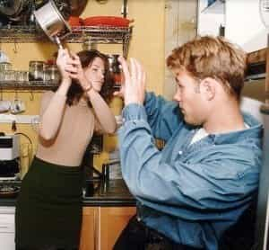

< < < Back
How Modern Societies Are Training Men Not To Marry – Return Of Kings
A wife of noble character is her husband’s crown, but a disgraceful wife is like decay in his bones. – Proverbs, NIV, 12:4
It’s often said that a good deed rarely goes unpunished in today’s world. The same could be said about the deed of marriage and its punishment by modern women.
As mentioned before, a man’s emotional attachment is the prize which women seek – and a lot of men have fallen bait for for a woman’s love and beauty to walk down the path of attachment and commitment, with sometimes devastating results.
The man who refuses to submit commit is often subject to social shaming. In fact, a woman’s emotional shaming of a man who refuses to commit to her inspite of her love for him, has been aptly described by Chinweizu as such:
Man, in his sentimentality, may refuse to acknowledge that the love felt for him by the woman who loves him is, at its core, a slaver’s love for her slave. – The Anatomy Of Female Power
Familiarity breeds contempt, and marriages are no exception to this. The “harsh” reasons which make most successful marriages work are usually that of wisdom and tolerance. Marriage (not being a destination) is a journey which demands constant work and input from either side, so it would be stupid to expect a man to bear the complete responsibility and burden of the woman too.
Thus the question a modern man needs to ask himself before marrying today is: how well can I presently and possibly tolerate this woman in the future? Will she present a threat to my individuality, freedom, and the family that I would sire with her?

When it comes to marriage, men have traditionally married women for lineage, beauty, wealth, status, sex, or fertility throughout history, but the wisest option was choosing the woman who also had virtue. But with the rise of feminism in modern societies, men’s options of finding virtuous women have drastically reduced, even more than in the past.
The blatantly visible social factors which influence men into non-commitment
Men have always had reasons to marry, but today’s society presents many reasons to stall marriage unless to an exceptional woman.
1.Unchained female hypergamy
It’s no secret how unchained female hypergamy is destroying the nuclear family. Every man who is aware of this usually would do well to adapt himself to learn some game and bang modern women, since women today usually reward sex to alphas first but would later choose to marry the betas waiting in line.
2. Depreciating quality of women
Would a sane modern man want to marry and sire kids with a ball-busting modern feminist woman, who revels in her sluttiness and whoredom? With feminism gradually taking away responsibility from the modern woman’s shoulders, it shouldn’t surprise to note that the corresponding decline in female virtue. A modern woman’s beauty is not immune to this decline as tattoos and fat acceptance rises today.
With her mind, beauty and virtue socially programmed to go down the drain by feminism, it’s no surprise if men loathe commitment to a modern woman.
And foreign women are not immune to this, as feminist garbage is increasingly being globalized and peddled in the name of female empowerment. And elsewhere, cunning women usually rip off innocent but stupid men looking for an uncorrupted ideal “one.” There are few women a man could choose to invest his trust in, and they are getting more difficult to find.
3. Unchained feminist hypocrisy
True equality between the sexes is impossible not only due to the innate differences in both men’s and women’s biology and psychology, but more so due to feminist hypocrisy. The resultant harmful (and at times comical) consequences of this is evident everywhere – scarring men, and damaging women’s minds into delusional megalomania into committing acts of outright stupidity.
Not only has it destroyed families, but it has also ruined an entire generation that will pass on the deleterious aftereffects to the next generation, in addition to an impending cultural collapse.
4. Irresponsible cheating and unjust divorces
We’ve discussed before about the rising epidemic of cheating wives who want “freedom.” And much has already been said about how modern women cheat more effectively than men (and rarely get found out). With modern societies increasingly outlawing paternity testing, the threat of rising cuckoldry is undeniable—enough to dissuade men from marriage.
We also know how modern women excel in flaking and wasting men’s time. But the worst way a woman destroys and wastes precious years and resources from a man’s life is when she unleashes her degeneracy in a marriage – not only by irresponsible adultery but also by an unjust divorce.
With more percentage of modern divorces initiated by women, (usually under a pretentious excuse of irreconcilable differences), it’s worth wondering what were the real causes behind the divorce – but usually it is when the hapless husband refuses to submit to his bridal slavemaster.
But again, modern women don’t lag behind in their financial strategy after divorce—the best way to adapt is to find a new husband (human ATM machine), not to mention her divorced ex who’d be grinding away paying off her an undeserving settlement, or even worse, child support payments if she has kids with him.
5. Spousal abuse

An alarming trend getting more noticeable in modern societies is that of married men suffering spousal abuse. Even combat-trained war veterans are not immune to this. With female-on-male spousal abuse on the rise, it becomes even more complicated since most men usually don’t report spousal abuse out of the fear of social ridicule, not to mention lopsided feminist family courts which usually favor the “weaker” sex.
But is only the physical spousal abuse that such men endure terrible? What about the emasculating psychological abuse these men often endure daily, but don’t report only until things turn physical? With modern gyno-centric family courts and societies further psychologically emasculating men this equation, the trip to the marriage altar seems more terrifying than diving into a pool of hungry piranhas.
Conclusion
Indeed, a man’s castle is his home. But when his home becomes a nightmare for him, he becomes an exiled king—which is increasingly becoming the case in modern societies courtesy of modern women. Indeed, you can’t chose whom you’re born with or in the family you were – but the choice to select the partner with whom you’d build your own family totally resides with you.
Appearances are increasingly deceptive in today’s world, and moreso for modern women. And the way modern marriages and women are headed, marriage seems to be an unnecessary test of a man’s patience, enough to make him a medical patient within it, if not by the end of it.
In today’s modern dysfunctional societies, the logical solution for a modern man is to stall marriage until he finds a “virtuous” woman (if he ever manages to find one) whose flaws he could tolerate after her beauty fades away.
And even if he ever manages to find her, it’s best he whisks her away from the social degeneracy before it corrupts her—keeping in mind the true nature of women.
 If you like this article and are concerned about the future of the Western world, check out Roosh's book Free Speech Isn't Free. It gives an inside look to how the globalist establishment is attempting to marginalize masculine men with a leftist agenda that promotes censorship, feminism, and sterility. It also shares key knowledge and tools that you can use to defend yourself against social justice attacks. Click here to learn more about the book. Your support will help maintain our operation.
If you like this article and are concerned about the future of the Western world, check out Roosh's book Free Speech Isn't Free. It gives an inside look to how the globalist establishment is attempting to marginalize masculine men with a leftist agenda that promotes censorship, feminism, and sterility. It also shares key knowledge and tools that you can use to defend yourself against social justice attacks. Click here to learn more about the book. Your support will help maintain our operation.
Read Next: Marriage Doesn’t Make Sense


{kind=link}
{kind=link}
{kind=link}
{kind=link}
{kind=link}
{kind=link}
{kind=link}
{kind=link}